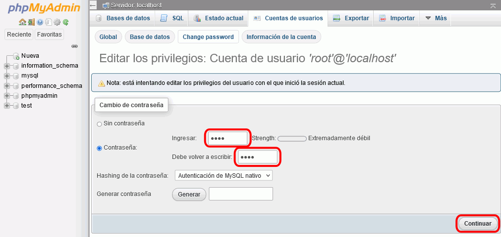
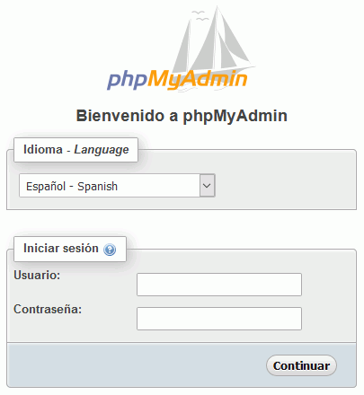

Estas soluciones están pendientes de actualizar a los ejercicios propuestos en el curso 2017/18.
Estas soluciones están pendientes de actualizar a los ejercicios propuestos en el curso 2017/18.
En esta lección se proponen soluciones detalladas de los ejercicios (1) de phpMyAdmin. Se recomienda intentar realizarlos primero sin recurrir a estas soluciones.





La página web de phpMyAdmin es https://www.phpmyadmin.net/.
La página web de descarga de phpMyAdmin es https://www.phpmyadmin.net/downloads/. Las versiones anteriores pueden descargarse de la página https://www.phpmyadmin.net/files/.
En cdlibre.org hay una sección dedicada a Bases de datos > MySQL, con información detallada sobre la última versión publicada de phpMyAdmin (entre otros).
Actualmente (diciembre de 2018), la penúltima versión de phpMyAdmin es phpMyAdmin 4.8.3, publicada el 22 de agosto de 2018, se puede descargar de la web de phpMyAdmin: phpMyAdmin 4.8.3 (22/08/18). Si esta versión no se encuentra disponible en la web de phpMyAdmin, puede descargarla desde la página de Descarga de aplicaciones. Se recomienda esa versión ya que estos ejercicios se han preparado para ella.
 Por escribir
Por escribir
Descomprima el archivo descargado en una carpeta accesible desde el servidor local.
En estos ejercicios, de acuerdo con las recomendaciones de configuración general de estos apuntes, se supondrá que:
La página de inicio de phpMyAdmin es el fichero index.php.
Ejecute el fichero index.php desde Eclipse. Se abrirá en el navegador la página de inicio de phpMyAdmin, que solicita un nombre usuario y contraseña para poder acceder a MySQL:

 Por escribir
Por escribir
/* config.inc.php */
$cfg['Servers'][$i]['AllowNoPassword'] = true; // Barto 2017-12-13 Permito usuario root sin contraseña
 Por escribir
Por escribir
 Por escribir
Por escribir
Actualmente (diciembre de 2018), la última versión de phpMyAdmin es phpMyAdmin 4.8.4, publicada el 11 de diciembre de 2018, se puede descargar de la web de phpMyAdmin: phpMyAdmin 4.8.4 (11/12/18). Si esta versión no se encuentra disponible en la web de phpMyAdmin, puede descargarla desde la página de Descarga de aplicaciones. Se recomienda esa versión ya que estos ejercicios se han preparado para ella.